Etapa 2
Na Etapa 2 são configurados o horizonte de planejamento e as preferências de exibição da execução do MRP.
Data inicial
A ‘Data inicial’ representa o ponto inicial a partir do qual o sistema começa a calcular as necessidades de materiais. Todas as fontes de demanda e fornecimento que possuírem as datas de entrega para antes dessa data são consideradas históricas e não são incluídas nos cálculos do MRP.
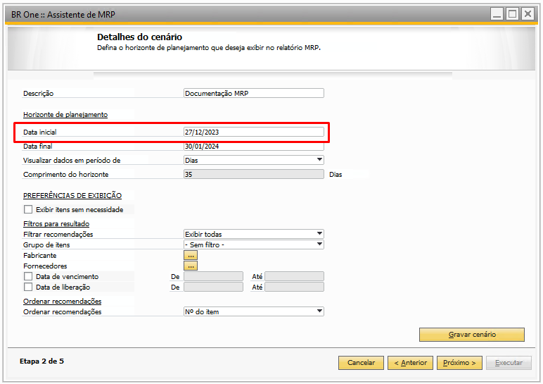{kind=link}
A ‘Data inicial’ deve ser menor ou igual a data atual, caso seja informado uma data maior do que a data atual, o add-on irá retornar a seguinte validação:
{kind=link}
BR One :: Data inicial deve ser menor ou igual a data atual.
Ao definir a ‘Data inicial’ com a data de 27/12/2023 e selecionar uma fonte de demanda, ao executar o MRP, será retornado apenas as demandas que estejam com a data de entrega dentro período escolhido. Em nosso exemplo, temos o pedido de venda 98, que teve sua demanda calculada e recomendada pelo MRP.
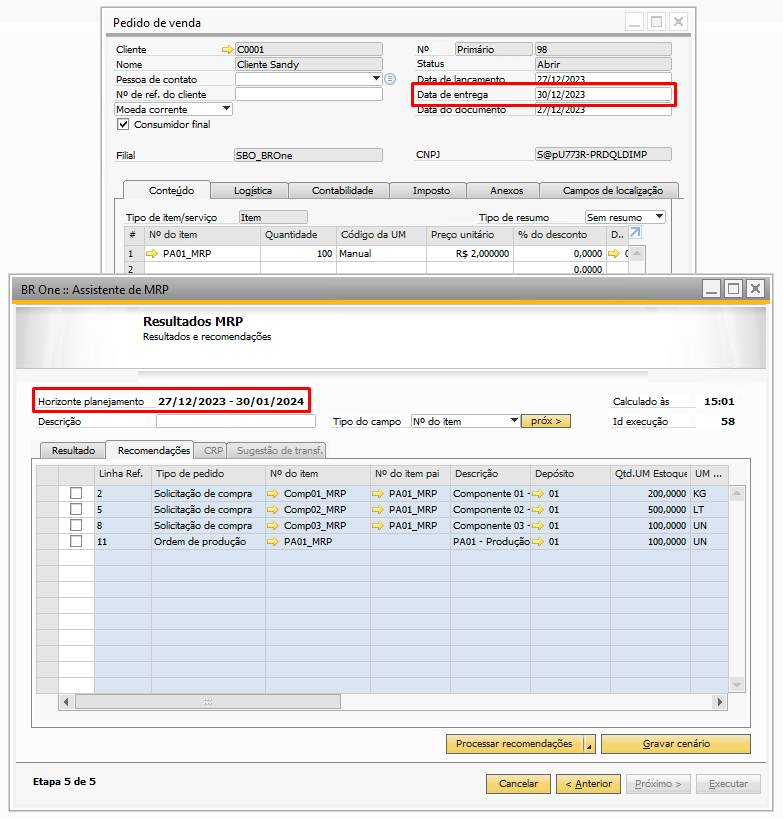{kind=link}
Caso a data do pedido de venda 98, fosse anterior a data informada no campo ‘Data inicial’, essa demanda não seria recomendada no MRP, pois o mesmo está fora do horizonte de planejamento selecionado.
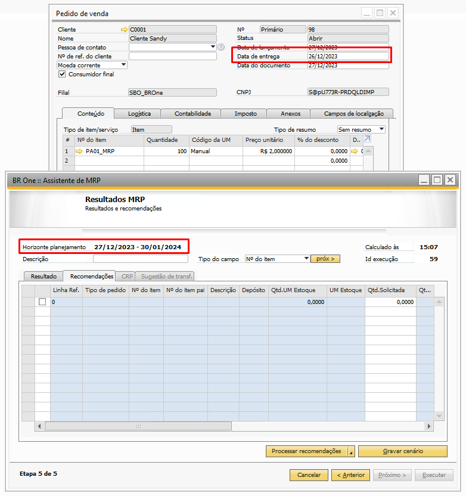{kind=link}
Data final
A ‘Data final’ define a última data considerada no cálculo do MRP. Todas as fontes de demanda e fornecimento que possuírem as datas superiores à essa data não são incluídas nos cálculos do MRP.
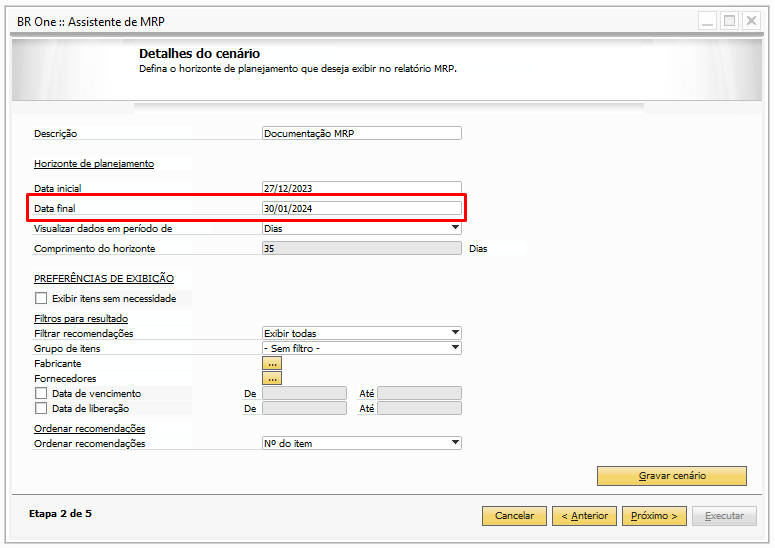{kind=link}
A ‘Data final’ não pode ser superior a 36 meses da data de execução, caso seja informado uma data superior, o add-on irá validar e exibirá a mensagem:
{kind=link}
BR One :: A diferença máxima entre data de execução e data final permitida é de 36 meses.
Ao definir a ‘Data final’ com a data de 30/01/2024, selecionar as fontes de demanda e fornecimento, e executar o MRP, será retornado apenas as demandas que estejam com a data de entrega dentro período escolhido. Em nosso exemplo, temos o pedido de venda 98, que teve sua demanda calculada e recomendada pelo MRP.
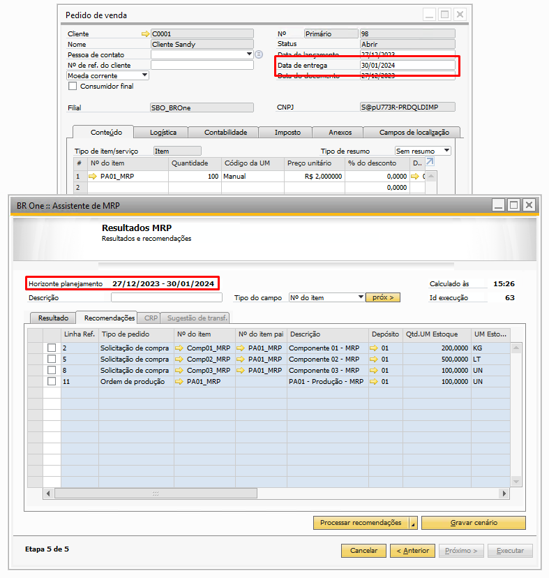{kind=link}
Caso a data do pedido de venda 98, seja maior que a ‘Data final’, essa demanda não será recomendada no MRP, pois a mesma está fora do horizonte de planejamento selecionado.
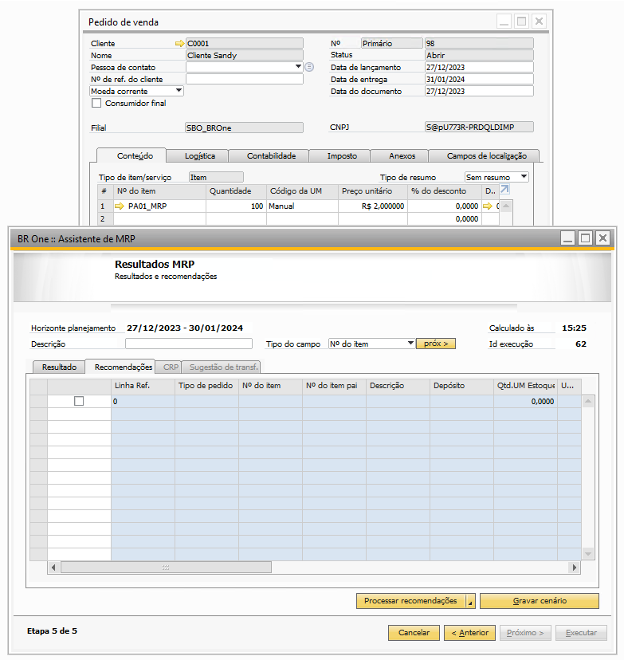{kind=link}
Visualizar dados em período de:
Este parâmetro permite escolher a forma de visualizar os dados, é possível escolher entre três opções:
Dias
Semanas
Meses
{kind=link}
A escolha das parametrizações acima, altera a forma como os dados calculados pelo MRP serão demonstrados na aba ‘Resultado’ da tela do ‘Assistente de MRP’, segue abaixo exemplo de cada uma das exibições:
Visualizar dados em período de: DIAS
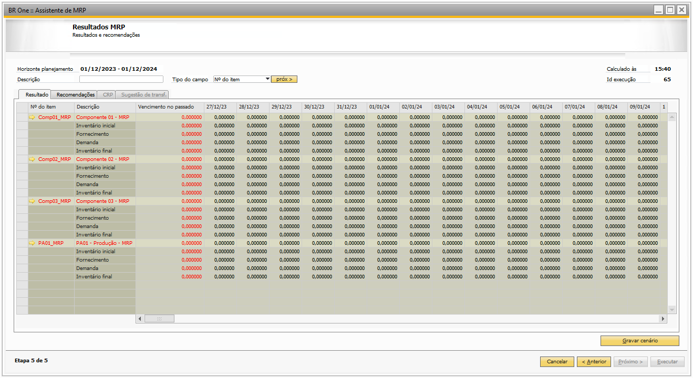{kind=link}
Visualizar dados em período de: SEMANAS
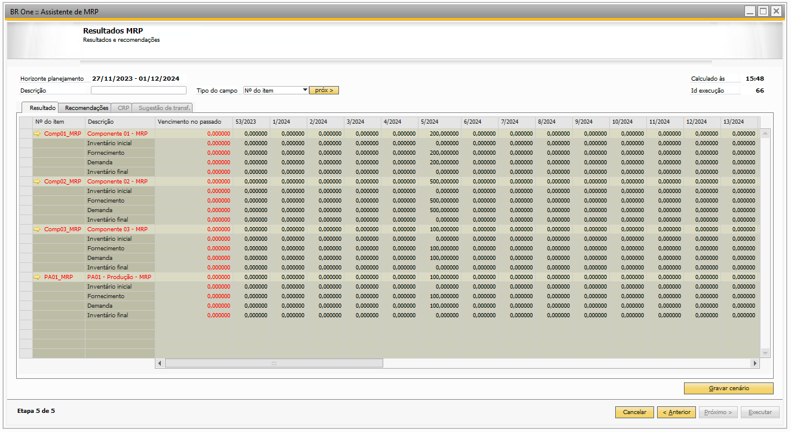{kind=link}
Visualizar dados em período de: MESES
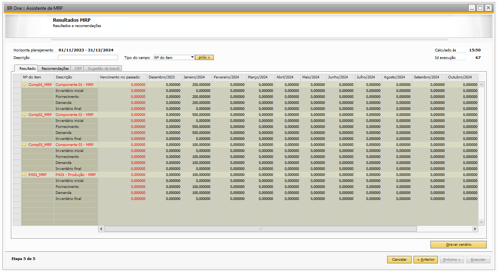{kind=link}
Comprimento do Horizonte:
Este campo demonstra o comprimento do horizonte conforme o tipo de visualização escolhida no parâmetro ‘Visualizar dados em período de’, onde o mesmo pode ser definido como:
Dias
Semanas
Meses
Segue abaixo exemplo de cada uma das exibições, conforme configuração escolhida:
Comprimento do horizonte: DIAS
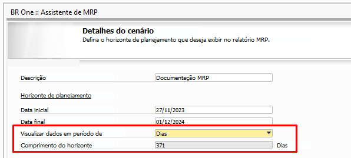{kind=link}
Comprimento do horizonte: SEMANAS
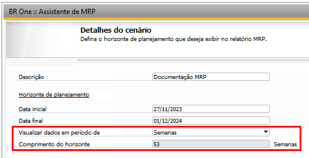{kind=link}
Comprimento do horizonte: MESES
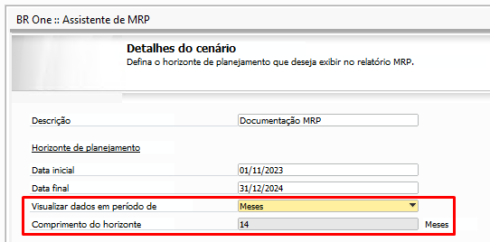{kind=link}
Exibir itens sem necessidade:
A flag ‘Exibir itens sem necessidade’ tem como objetivo exibir os itens que não possuem necessidade de fornecimento, isto é, itens em estoque que atendem à demanda. Caso selecionado, esses itens aparecerão na aba ‘Resultado’ somente.
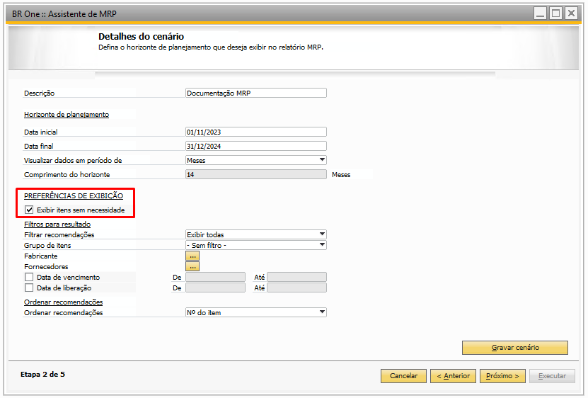{kind=link}
{kind=link}
Filtrar recomendações:
No parâmetro ‘Filtrar recomendações’, o add-on permite realizar os filtros de três formas:
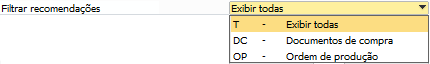{kind=link}
Exibir todas
Tanto as recomendações de ‘Solicitação de compra’ como a ‘Ordem de produção’ aparecerão;
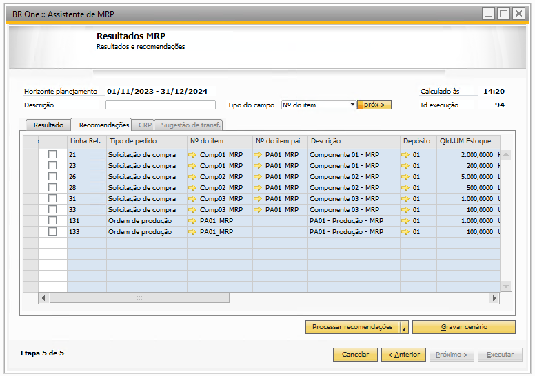{kind=link}
Documentos de compra:
Traz apenas os itens que são sugeridos nas solicitações de compra. Se a flag ‘Exibir itens sem necessidade’ estiver marcada, traz também os itens sem necessidade cujo método de planejamento seja ‘Comprar’.
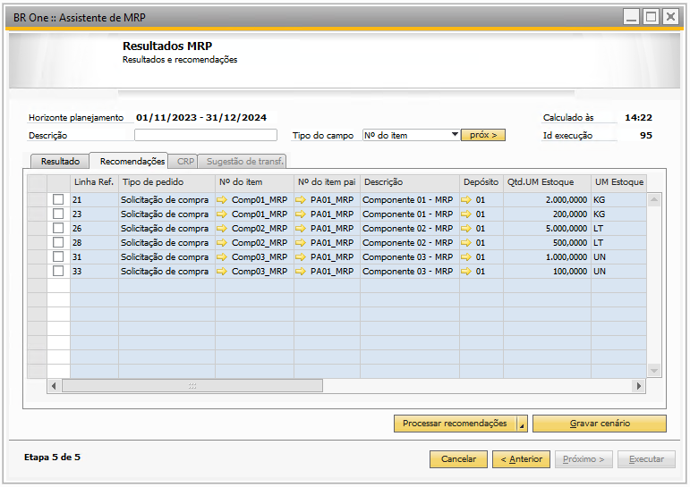{kind=link}
Ordem de produção:
Traz apenas os itens que são sugeridos nas ordens de produção. Se a flag ‘Exibir itens sem necessidade’ estiver marcada, traz também os itens sem necessidade cujo método de planejamento seja ‘Produzir’.
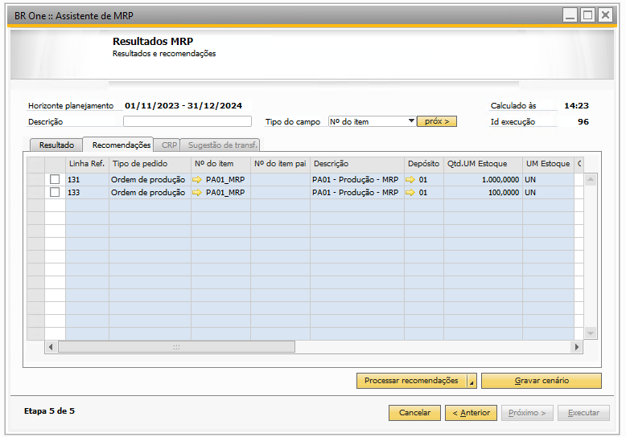{kind=link}
Grupo de itens:
O parâmetro ‘Grupo de itens’, permite realizar o filtro de acordo com o grupo de itens selecionado. Com isso o MRP irá considerar em suas recomendações apenas os itens que fazer parte do ‘Grupo de itens’ selecionado.
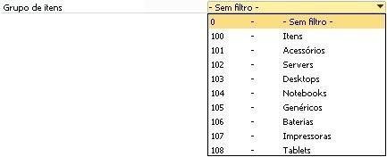{kind=link}
Fabricantes:
O parâmetro ‘Fabricante’, permite realizar o filtro de acordo com o fabricante selecionado. Ao clicar no botão ‘[…]’, a tela ‘Fabricante’ será aberta e nela poderão ser selecionados os fabricantes para filtrar os resultados para os itens de compra e produção.
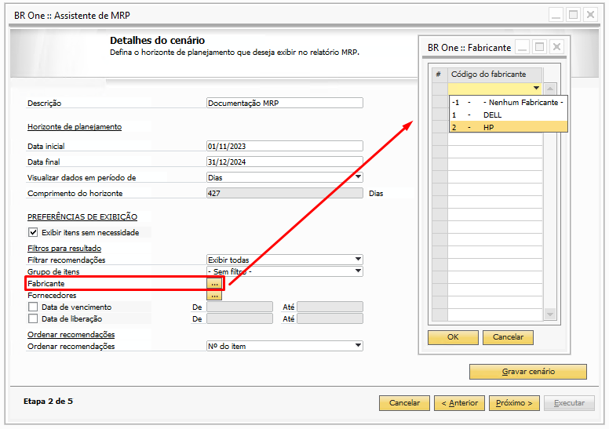{kind=link}
Considerando o exemplo acima, existem dois fabricantes cadastrados que podem ser selecionados, levando em conta o pedido de venda número 100, há dois itens que possuem fabricantes diferentes, conforme demonstra imagem abaixo:
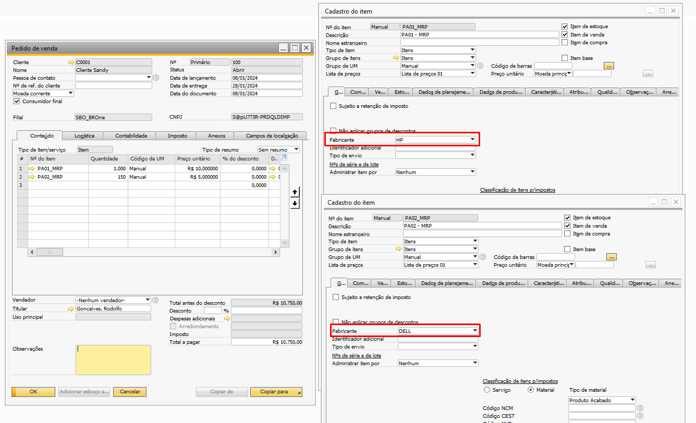{kind=link}
Ao rodar o MRP sem filtrar nenhum fabricante, o MRP irá considerar em seus cálculos todos os itens que possuam demanda, conforme imagem abaixo:
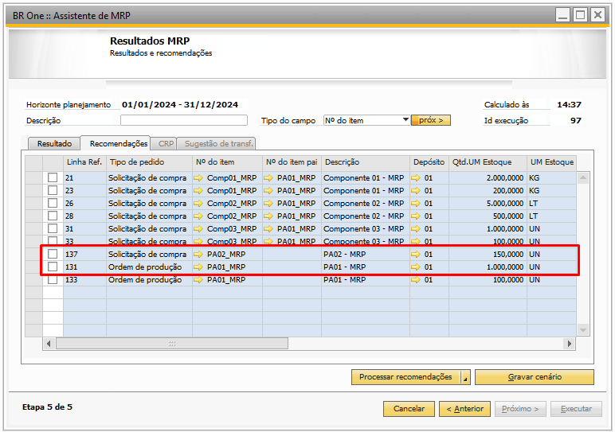{kind=link}
Entretanto, caso seja filtrado um fabricante, o MRP irá recomendar apenas os itens que possuam esse fabricante cadastrado:
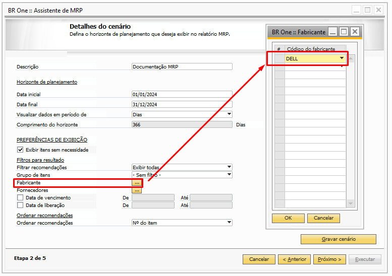{kind=link}
{kind=link}
Fornecedores:
O parâmetro ‘Fornecedores’, permite realizar o filtro de acordo com os fornecedores selecionados. Ao clicar no botão ‘[…]’, a tela ‘Fornecedores’ será aberta e nela poderão ser selecionados fornecedores para filtrar os resultados para os itens de compra.
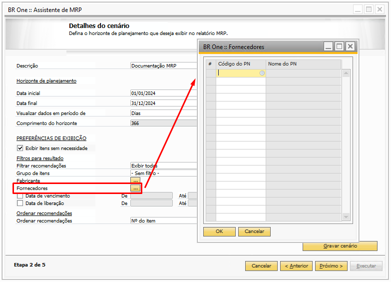{kind=link}
Ao filtrar os fornecedores desejados, o MRP irá calcular e recomendar apenas os itens que possuam o campo ‘Fornecedor preferencial’ ou da tela ‘Fornecedores preferidos’ da tela de ‘Cadastro do item’ igual ao selecionado na etapa 2 do Assistente de MRP.
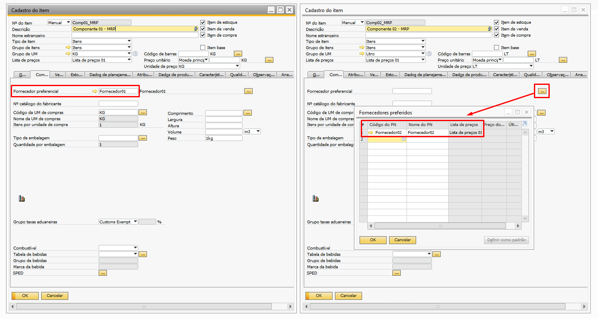{kind=link}
O item ‘Comp01_MRP’, não possui nenhum fornecedor preferencial ou preferido cadastrado.
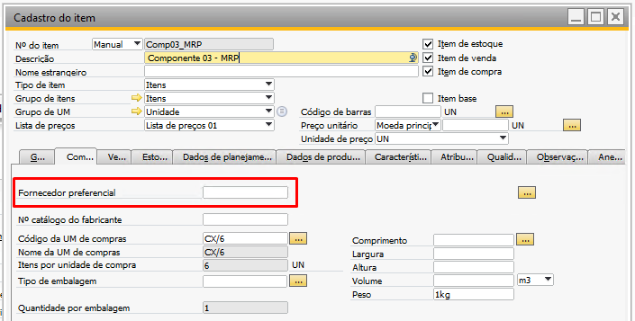{kind=link}
Ao executar o Assistente de MRP determinando alguns fornecedores no filtro de ‘Fornecedores’, o resultado do MRP não irá trazer nenhuma recomendação de compra para o item ‘Comp01_MRP’, mesmo ele fazendo parte do roteiro dos itens a serem produzidos.
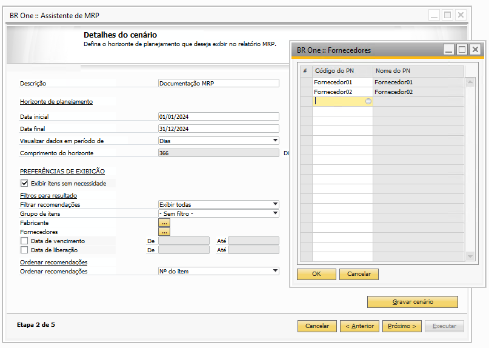{kind=link}
{kind=link}
Data de vencimento:
No parâmetro ‘Data de vencimento’, quando marcado, pode ser escolhido um período de datas para filtrar por data de vencimento dos documentos.
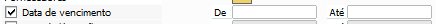{kind=link}
Data de liberação:
No parâmetro ‘Data de liberação’, quando marcado, pode ser escolhido um período de datas para filtrar por data de liberação dos documentos.
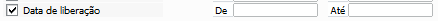{kind=link}
Ordenar recomendações:
O parâmetro ‘Ordenar recomendações’ tem a função de ordenar os itens da aba ‘Recomendações’, após a execução do MRP. As recomendações podem ser ordenadas conforme abaixo, onde todas as ordenações são agrupadas pelo ‘Tipo de pedido’:
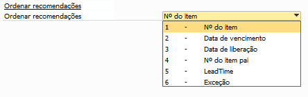{kind=link}
Exemplo de ordenação por ‘Nº do item’:
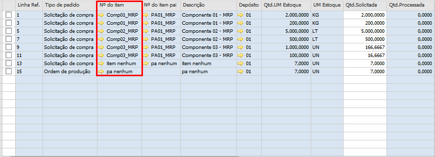{kind=link}
Exemplo de ordenação por ‘Data de vencimento’:
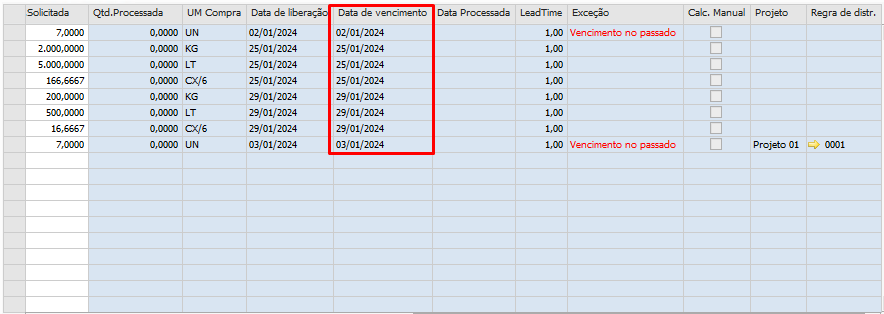{kind=link}
Exemplo de ordenação por ‘Data de liberação’:
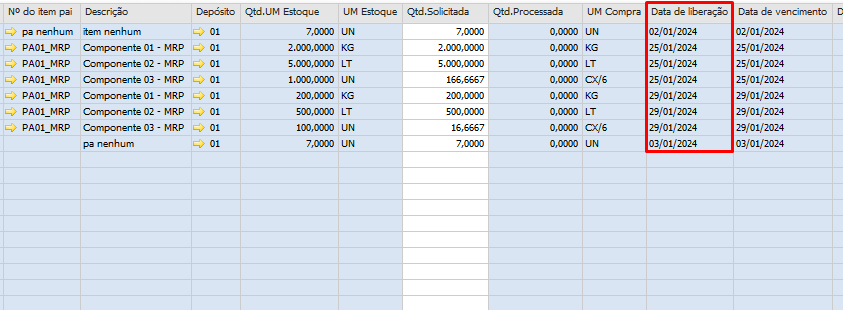{kind=link}
Exemplo de ordenação por ‘Nº do item pai’:
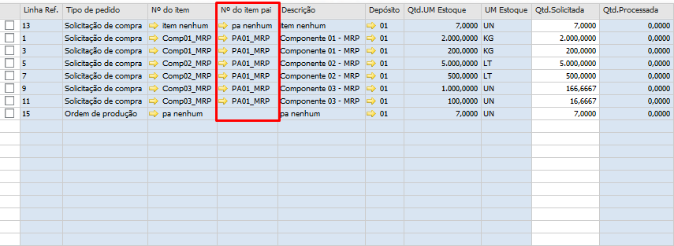{kind=link}
Exemplo de ordenação por ‘LeadTime’:
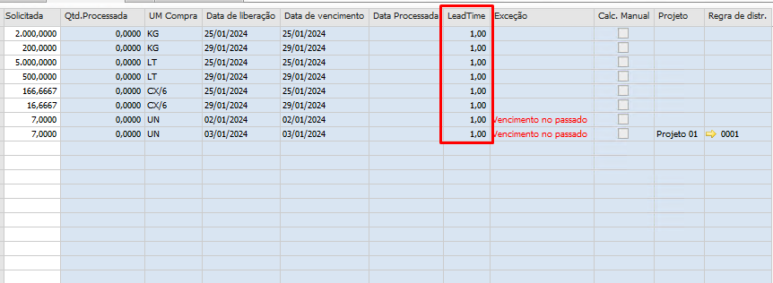{kind=link}
Exemplo de ordenação por ‘Exceção’:
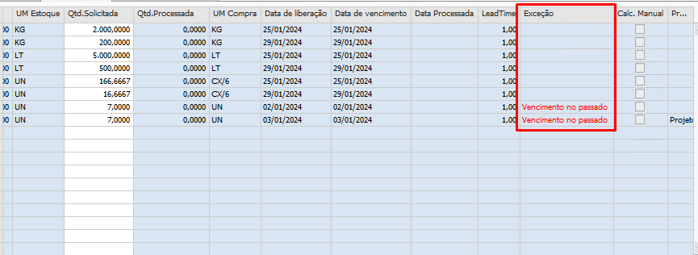{kind=link}